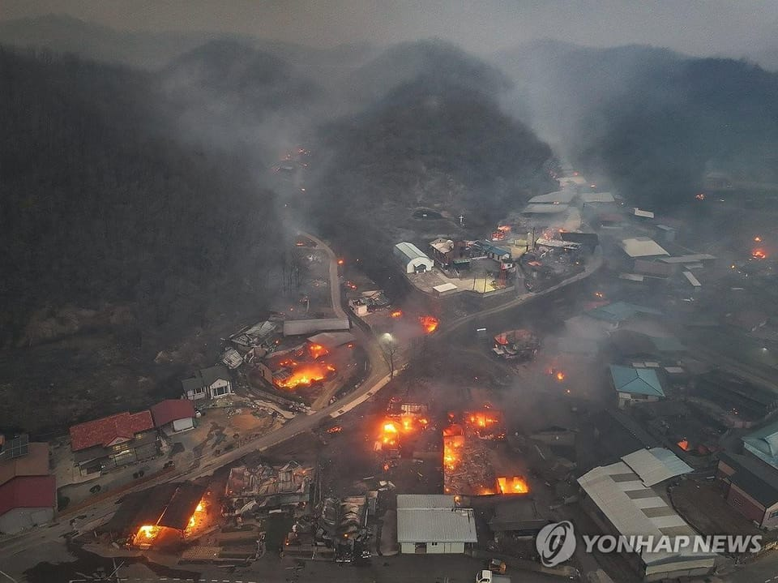

世界苦茶03月26日新闻 | 36条 | 美国副总统夫人将挑衅访问格陵兰岛

美国副总统夫人将挑衅访问格陵兰岛 | 中国再建清史研究中心 | 上海刷新3月高温纪录 | 中国继续通过中葡外长对话拉拢欧洲 | 日本强化印太合作
习时代节目
苦茶数据
美元兑人民币：7.26（昨日7.26，前日7.26）
美元兑日元：150.11（昨日150.77，前日149.76）
上证指数：3371（昨日3363，前日3369）
标普500指数：5776（昨日5767，前日5667）
比特币：87648（昨日86914，前日85793）
布伦特原油：73.34（昨日72.97，前日71.92）
中国新闻
• 中消协警示免密支付 ：中国消费者协会星期二呼吁民众，网络购物谨慎使用手机免密支付功能，避免因账户权限过度开放而引发资金损失。据中国央视新闻报道，免密支付即“无需密码确认支付”，是部分支付平台或应用为提升支付便捷性推出的功能，用户开通后，单笔交易金额在一定限额内可直接扣款。这一功能若被不法分子利用，可能带来严重安全隐患。手机丢失或账号泄露时风险激增，若他人获取受害者的账号或设备，可通过免密支付直接消费或购买虚拟服务，且无需二次验证。
• 中葡外长对话强调合作 ：中美贸易战升级之际，中国外长与葡萄牙国务部长兼外长兰热尔会谈时说，面对变乱交织的国际形势，团结合作是各国唯一正确的选择，并称中国视欧洲为多极世界中的重要一极，支持欧洲保持战略自主。据中国外交部官网星期二发布的消息，王毅当天在北京同兰热尔举行中葡第二次外长级战略对话。王毅表示，中葡有相互尊重、相互支持的好传统，这是中葡关系长期稳定发展的根本原因，也是两国关系行稳致远的政治保障。双方运用政治智慧妥善解决澳门问题，树立了通过友好协商解决历史遗留问题的样板。王毅说，今年是中葡建立全面战略伙伴关系20周年，也是中欧建交50周年，中国愿同葡萄牙一道，打造更加稳定、更富成果、更具活力的中葡关系，推动中欧成为相互信赖、彼此成就的战略伙伴。
• 中方批美对委内瑞拉制裁 ：针对美国宣布对进口委内瑞拉石油的国家实施关税制裁，中国外交部批美国滥用非法单边制裁，干涉他国内政，中国对此坚决反对。中国外交部发言人郭嘉昆星期二在例行记者会上应询时，呼吁美国停止干涉委内瑞拉内政，废除对委内瑞拉的非法单边制裁，多做有利于委内瑞拉和其他国家和平稳定发展的事。郭嘉昆称，贸易战关税战没有赢家，加征关税只会让美国企业和消费者承受更大的损失。
• 上海刷新3月高温纪录 ：中国上海徐家汇站气温已冲破30摄氏度，成为1933年以来最早出现30摄氏度气温的一年。上海市气象局官方微博“上海市天气”在星期二中午发文提到上述消息，并称这目前位列历史3月日最高气温第二位，“浦东、闵行也超过30℃，而且还在继续上升中”。中国天气网也在星期二下午通过官方微博发文称，星期三上海最高气温还可能超过31摄氏度，“看看3月最高气温纪录会不会继续被刷新”。
• 中社科设清史研究中心 ：中国社会科学院清史研究中心3月21日成立，提出将反对历史虚无主义，牢牢把握清史研究国际话语权。据澎湃新闻星期二报道，清史研究中心成立大会3月21日在北京举行，中国社会科学院院长、党组书记，中国历史研究院院长、党委书记高翔出席会议。此外，来自中国社会科学院、中国第一历史档案馆、故宫博物院、中国人民大学、中央民族大学等15家科研院所和高校的35位专家学者参会。
• 吉林人口减少22万 ：中国东北的吉林省去年常住人口减少22万。观察者网星期二报道，吉林省统计局星期一发布《吉林省2024年国民经济和社会发展统计公报》，其中公布了吉林省2024年常住人口变动情况。数据显示，2024年末吉林省全省总人口为2317.31万人，比2023年减少22.10万人。其中，全年出生人口9.7万人，死亡人口21万人。
• 湖南耒水流域现铊污染 ：湖南耒水流域近日出现铊浓度超标情况。郴州-衡阳跨市断面铊浓度3月16日为0.13微克/升，超出标准规定的0.1微克/升。郴州市确定污染源为该市苏仙区良田水泥厂。该企业近日拆除旧生产线的窑炉时，窑炉内含铊灰尘被雨水冲刷后，经雨水排放口流入外环境水体。通报称，郴州市和衡阳市近日开展污染源控制以及投加除铊剂等措施。3月16日以来的数据显示事发地下游各水厂出水铊浓度均达标。
亚太印太新闻
• 日拟加强印太合作 ：日本说，它支持与韩国和印度在印太地区开展密切的安全合作。路透社报道，日本防卫省星期一在一份声明中说，日本支持建立一个多层次联盟，但拒绝透露是否同意或考虑扩大美日澳非“小分队”。SQUAD是一个非正式多边组织，包括澳大利亚、日本、菲律宾和美国四个国家，聚焦于国防合作、情报共享以及联合军事演习和行动。
• 越南成旅游强国新星 ：越南正迅速崛起为东南亚的新兴旅游强国。越南去年接待了1750万人次的国际游客，仅次于泰国的3500万人次及马来西亚的2500万人次。冠病疫情结束后旅游业解封以来，越南旅游业已恢复到疫情前的98%，超越泰国的87.5%和新加坡的86%，成为区域复苏速度最快的国家。越南旅游业的增长势头持续到今年。根据越南国家旅游局公布的最新数据，今年1月和2月接待了近400万人次的国际游客，同比增长30.2%。
• 泰八成民众支持赌场合法化 ：泰国赌场合法化公众咨询活动的绝大多数参与者，对赌场合法化表示支持。泰国政府发声明说，财政部于2月28日至3月14日举行了公众咨询活动，有7万多人提交了意见和建议，约80%的参与者同意赌场法案草案的整体内容。泰国希望在今年通过备受争议的赌场法案，以吸引更多外国投资，增加税收，同时打击非法赌博场所。不过，此举遭反对党和反赌博民间团体批评，他们指赌场在很大程度上只有利于大企业和外国公司。
• 台称有能力应对封锁 ：台湾官员针对如果台湾被封锁或两岸开战，台湾水电粮食供应能撑多久做出回应时说，政府有因应对策，但不方便说出能撑多久。综合台湾中央广播电台和联合新闻网报道，经济部长郭智辉星期二在赴立法院议场备询前，接受媒体联访时做出上述回应。在这之前，美国《华尔街日报》星期天发文称，中国大陆已做好封锁台湾的准备，大陆军方已展开孤立台湾的演练，并说在包围台湾，切断台湾与世界的联系，并试图迫使台湾屈服方面，大陆军方比以往任何时候更有充分的准备。
• 台国防网站疑遭黑客篡改 ：台湾国防部在网站公布的部分军法草案疑似遭黑客入侵，导致法案名称被篡改，甚至被植入“中华人民共和国”等字眼。据台湾《联合报》报道，台湾总统赖清德宣布恢复军法审判后，国防部连日在国发会公共政策网络参与平台公布《国防部法律专业人员处理侦查案件事务办法》《军人违纪罚款分期缴纳办法》等多项关联草案。然而，国发会网页星期二早上疑似遭到黑客入侵，导致部分草案的公告单位名称由国防部被改为“国家防卫部”，一些法案的名称被篡改为“武装部队惩戒权及责任条例”，部分草案主旨还被植入“中华人民共和国成立70周年”等字样，法令依据则成为“印度航空军法”等。
• 台蓝绿罢免案互控造假 ：台湾检察官就罢免案伪造文书案搜索国民党台南市党部，国民党立委星期一作出反制，告发亲绿民团涉嫌伪造罢免案文书。国民党立委罗智强更质疑，民进党正执行“在野党全面歼灭计划”。综合台湾《联合报》和公视新闻网等报道，国民党立委陈玉珍、王鸿薇等人星期一早上到台北地检署，告发领衔罢免王鸿薇的民团“山除薇害”涉嫌伪造文书及违反《个资法》，并呼吁检方不要双标。此前多份针对绿营立委罢免案的连署，被揭露涉嫌伪造，如一些连署书来自死亡人士。台南地检署上星期四就罢免案名册涉嫌不法搜查国民党台南市党部，并逮捕庄姓副主委等两人。
科技新闻
• DeepSeek推V3模型更新 ：中国初创公司深度求索发布了V3模型更新，加强了模型的编程能力，显示这家公司希望在人工智能激烈竞争中保持领先优势。综合彭博社和科技博客网站VentureBeat报道，AI开源模型DeepSeek-V3的版本更新V3-0324星期一深夜在AI开源平台HuggingFace低调上线。DeepSeek没有为此次版本更新发布任何公告，延续了该公司的低调风格。
财经新闻
• 特海国际陷亏损困局 ：经营海底捞火锅餐馆的特海国际控股有限公司因外汇影响而重新陷入亏损，集团2024财年第四季净亏1160万美元，从一年前同季的2330万美元净利逆转。此前，集团在第三季扭亏为盈，从2023财年第三季的净亏140万美元转为取得3772万美元净利。根据特海国际星期二发布的业绩报告，由于集团积极扩充业务、提高同店销售、翻台率和经营效率，集团2024财年第四季营收同比增加10.4％至2亿零880万美元，营业盈利劲增44.6％至1750万美元。尽管如此，集团第四季仍出现亏损，这主要是因为当地货币兑美元汇率下跌，造成它蒙受4000万美元外汇净亏。
• 何立峰欢迎美资加码投资 ：分管经济的中国副总理何立峰，星期一会见美国黑石集团董事长苏世民时表示，欢迎包括黑石集团在内的更多美资企业和长期资本继续深化对华互利合作。据新华社报道，何立峰星期一在北京钓鱼台国宾馆会见苏世民时说，当前中国经济发展态势向新向好，活力和动力进一步释放，国内国际双循环相互促进的新发展格局加快形成，前景更加光明。何立峰表示，欢迎包括黑石集团在内的更多美资企业和长期资本继续深化对华互利合作，为推动中美经贸关系健康发展发挥更大作用。
• 美制造业因关税再萎缩 ：受关税相关的材料价格上升影响，美国制造业本月重新陷入萎缩区间，而服务业前景恶化。标普全球发布3月制造业采购经理指数初值报49.8。数字低于50表示萎缩。尽管部分由于需求增强，服务提供商的产出有所改善，但对未来一年前景的信心跌至2022年以来的次低水平。受新业务增长和天气好转助力服务业活动指数升至三个月高位的推动，3月综合指数初值上涨3点至52.4。与此同时，关税上涨和联邦支出削减令服务提供商更加焦虑。
• 韩国将赴中纪念安重根 ：韩国政府将派代表团前往中国，出席抗日烈士安重根殉国纪念仪式。据韩联社报道，韩国国家报勋部星期二宣布，韩国政府将派遣代表团访问中国，出席星期三在大连旅顺日俄监狱旧址博物馆举行的安重根殉国115周年纪念仪式，代表团将由报勋部副部长李凞玩率领。报道称，韩国政府代表团此前由司局级官员率领，但今年是安重根殉国115周年暨光复80周年，韩国政府首次派遣副部级官员出席活动。
• 日对中石墨电极加征关税 ：日本经济产业省官员星期二说，日本内阁已决定对中国石墨电极出口征收95.2%的反倾销税，自星期六起生效，为期四个月。据路透社报道，在上述措施推出前，日本政府上个月的一项中期调查报告显示，中国以不公平的低价出口石墨电极，并给日本企业造成了损害。石墨电极是一种用于电炉炼钢的工业材料。在收到日本石墨制造商SEC Carbon、东海碳素和日本碳素公司要求征收关税的申请后，日本政府在2024年4月启动了调查。
• 加拿大就关税问题申诉中方 ：加拿大已在世界贸易组织提起申诉，反对中国对加拿大农产品和渔业产品加征关税。世界贸易组织星期一在官网发新闻稿指出，加拿大已请求与中国进行WTO争端磋商，涉及中国对来自加拿大的特定农产品和渔业产品加征额外进口关税的措施。中国国务院关税税则委员会办公室在3月8日发布公告，宣布从3月20日起对原产于加拿大的菜籽油、油渣饼、豌豆加征100%关税；对水产品、猪肉等加征25%关税。
• 中发布反制裁法实施细则 ：中国公布新规定，强化执行反外国制裁法，当中明确对反制裁对象查封或冻结的财产，包括现金、股票、知识产权等。综合新华社和中新社星期一报道，中国总理李强日前签署国务院令，公布《实施〈中华人民共和国反外国制裁法〉的规定》（以下简称《规定》）。《规定》自公布之日起施行。《规定》全文共22条，内容主要包括完善反制措施、细化反制程序、加强部门协同、强化措施执行等。
• 特朗普将宣布汽车关税 ：美国总统特朗普将在未来几天宣布汽车关税，他同时暗示，将在下周宣布的“对等”关税中给予部分国家减免。特朗普星期一在白宫的讲话，让外界对其计划于4月2日宣布的大规模关税措施感到更加困惑。特朗普告诉记者，在更广泛的关税方案公布之前，他计划“很快，在未来几天内”推进长期威胁要加征的汽车进口关税。彭博社引述特朗普说，定于下星期三推出的关税措施将侧重于所谓的对等关税，即根据不同国家对美国产品的关税及其他贸易壁垒，逐一设定对应的关税税率。此外，他星期一两次暗示，部分贸易伙伴可能获得豁免或减免。
• 比亚迪营收首次超特斯拉 ：中国电动车巨头比亚迪去年销售额首次突破1000亿美元大关，超越美国对手特斯拉。综合中国《证券时报》、彭博社和法新社报道，比亚迪星期一晚公布，公司截至2024年的营业收入为7771.02亿元人民币，同比增长29.02%。这是比亚迪年度营收首次突破1000亿美元，而特斯拉去年的年度营收为977亿美元。
• 中央银行调整MLF操作方式 ：中国央行中期借贷便利操作方式将不再有统一中标利率，业内人士指出，此举将发挥机构市场化自主定价能力。据中新社报道，中国央行星期一发布消息称，为保持银行体系流动性充裕，更好满足不同参与机构差异化资金需求，自本月起中期借贷便利将采用固定数量、利率招标、多重价位中标方式开展操作。中国央行星期二将开展4500亿元人民币MLF操作，期限为一年期。
• 中拟对文旅消费提供补贴 ：知情人士说，中国政府正研究对文体旅游等服务消费提供补贴的方案，如果消费回升不及预期，则很可能在下半年实施。对目前消费品以旧换新的补贴政策，外界批评其主要是在帮业者去库存，而非增加消费者的购买力，无法持续性地起到扩大内需、矫正经济结构的效果。3月16日公布的《提振消费专项行动方案》 在“扩大文体旅游消费”一节均为存量政策。
• 印度要求三星支付6.01亿美元税款和罚款： 印度政府命令显示，印度政府已要求三星及其在该国的高管支付6.01亿美元的补缴税款和罚款，原因是其涉嫌规避关键电信设备进口关税，这一追征金额在近年来同类案件中位居前列。三星2023年因错误分类进口商品以逃避10%或 20%的关税而收到警告，涉及的是用于移动通信塔的关键传输组件。海关专员巴贾杰在命令中指出，三星违反了印度法律，并故意向海关机构提交虚假文件以获取清关许可。三星被责令支付 446 亿印度卢比，包括未缴税款和100%的罚款，命令显示七名印度高管面临8100万美元的罚款。
俄乌战争
• 俄无人机袭乌致伤亡 ：乌克兰空军星期二说，俄罗斯在夜间发射了139架无人机和一枚伊斯坎德尔-M弹道导弹，造成两人受伤，仓库设施受损。路透社报道，乌空军在Telegram上的一份声明中说，空军击落了78架无人机，另有34架没有击中目标，没有说明其余27架无人机和导弹的下落。哈尔科夫州长西尼胡博夫称，无人机的袭击还损坏了铁路电线，并导致东北部伊久姆市一家企业及周边起火，燃烧面积达8400平方米。
• 俄促美约束泽连斯基 ：俄罗斯星期二说，愿意就黑海航运安全达成一项新协议，但前提是美国需要求乌克兰总统泽连斯基尊重此协议。路透社报道，外交部长拉夫罗夫说，只有这样才能提供俄罗斯所需的保证。“我们需要明确的保证。鉴于曾经仅与基辅达成协议的教训，我们必须要求华盛顿对泽连斯基及其团队下命令。
• 俄美就乌局势密谈12小时 ：俄罗斯和美国代表团在沙特阿拉伯首都利雅得举行的会谈在进行12个小时后结束，一名俄罗斯谈判代表说，俄罗斯希望联合国和其他国家加入它与美国就乌克兰部分停火问题举行的谈判。俄联邦委员会国际事务委员会主席卡拉辛星期二告诉俄罗斯塔斯社：“我们谈论了所有事情，这是一次激烈的对话，并不容易，但对我们和美国来说都非常有用。”法新社引述他说：“我们将继续谈判，争取国际社会，尤其是联合国和某些国家加入其中。”
• 欧盟确认乌克兰领土完整，谴责俄罗斯在维特科夫争议中举行虚假公投。欧盟委员会发言人安妮塔·希佩尔 3 月 24 日重申欧盟支持乌克兰领土完整，并谴责俄罗斯在非法占领地区举行虚假“公投”： 美国中东问题特使史蒂夫·维特科夫 3 月 21 日以所谓的“公投”为由暗示，居住在被占领土的乌克兰人可能希望生活在俄罗斯统治下。这些言论呼应了克里姆林宫的宣传，引起了乌克兰及其盟友的强烈反对。希佩尔表示，欧盟不承认俄罗斯在非法吞并的乌克兰地区“持枪威胁”举行的“完全欺诈性的”公投。
其他新闻
• 美副总统夫人访格风波 ：美国副总统夫人乌莎·万斯将于3月27日出发，率代表团访问格陵兰岛。美总统国家安全事务助理华尔兹、能源部长赖特等据报将陪同访问。格陵兰岛自治政府总理埃格德表示，乌莎·万斯和华尔兹并未受邀参加任何会面，并怒批美方这一安排显然是施压和挑衅。丹麦外交部长拉斯穆森说，这一举动反映出“美国人不恰当的欲望”。美总统特朗普3月24日说，乌莎·万斯访问格陵兰岛一事“是友好的，不是挑衅”。这次访问是应格陵兰岛方面的邀请，已有格陵兰岛人主动接触美国、寻求合作。特朗普重申对格陵兰岛的浓厚兴趣，称该岛对美国国家安全至关重要。
• 美企称被拘员工已获释 ：美国尽职调查公司美思明智证实，中国已经释放了该公司所有被拘留的员工。美思明智的一名发言人在电邮中告诉路透社，这批在2023年3月被拘留的员工已经被释放，“我们感谢中国政府，让我们以前的同事现在可以回家与家人团聚”。2023年3月底，中国对美思明智北京办事处进行了突袭搜查，结束了公司在当地的业务并拘留五名中国籍员工。
• 当特朗普的高级助手在 Signal 上发短信时，航班数据显示群聊中的一名成员正在俄罗斯： 哥伦比亚广播公司新闻网对开源航班信息和俄罗斯媒体报道的分析显示，特朗普总统的乌克兰和中东特使史蒂夫·维特科夫在莫斯科会见了俄罗斯总统弗拉基米尔·普京，当时他被纳入了 Signal 上十几名其他高级政府官员的群聊中。俄罗斯曾多次试图破坏 Signal，这是一个流行的商业消息平台，许多人惊讶地得知特朗普政府高级官员曾用它来讨论敏感的军事计划。根据航班跟踪网站 FlightRadar24 的数据，维特科夫于当地时间 3 月 13 日中午过后不久抵达莫斯科，俄罗斯国家媒体随后播放了他的车队离开伏努科沃国际机场的视频。据《大西洋月刊》编辑杰弗里·戈德伯格 称，大约 12 小时后，他与其他特朗普政府高级官员一起被添加到 Signal 上的“胡塞 PC 小组”聊天中，讨论即将对也门胡塞武装采取的军事行动。戈德伯格被添加到聊天中的原因尚不清楚。